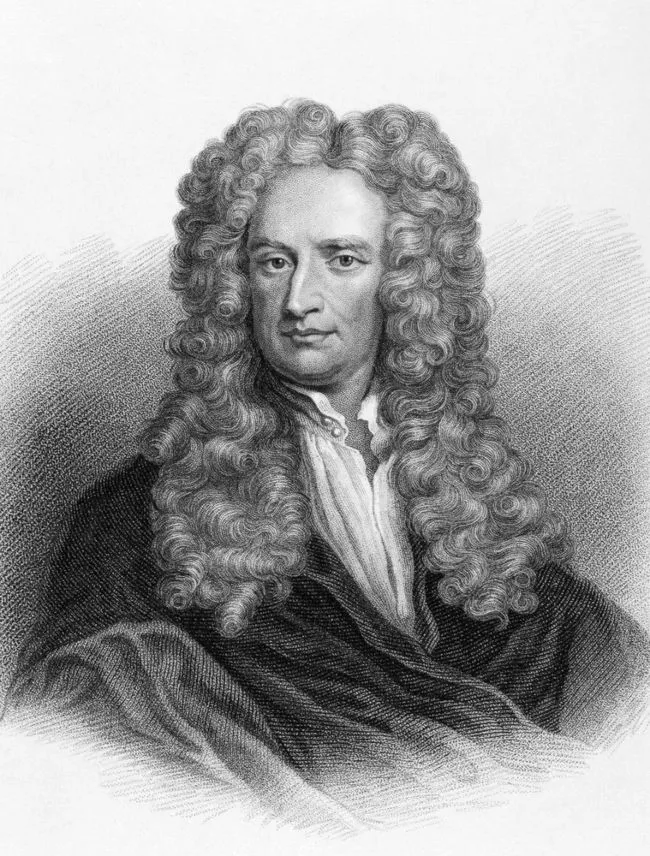
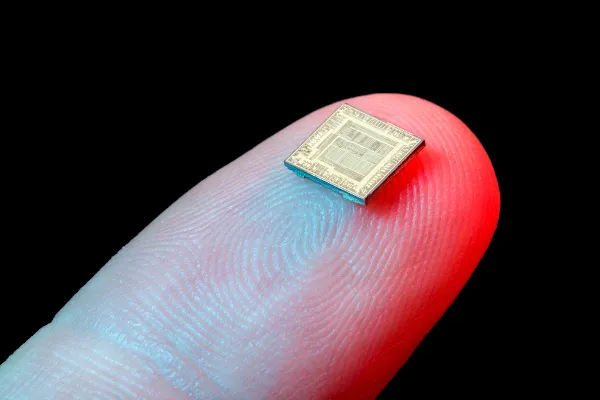
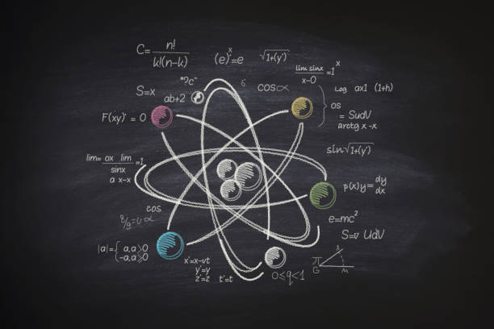
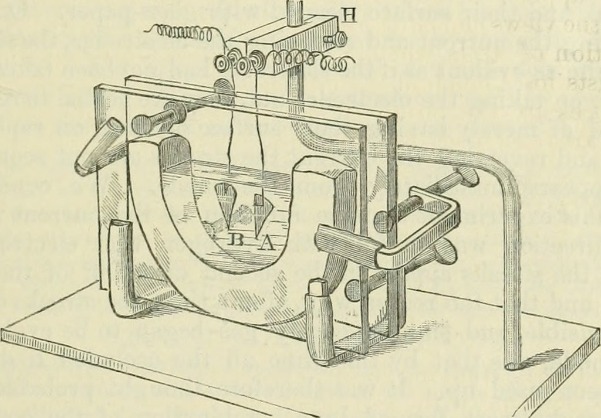

A Física é uma ciência muito vasta que, por razões históricas, é subdividida em diferentes áreas. A primeira divisão da Física está relacionada à Física Clássica e à Física Moderna.
A física é uma ciência fundamental que desempenha um papel crucial no avanço do conhecimento científico e tecnológico. Suas descobertas e aplicações têm impacto em várias áreas da sociedade, incluindo eletrônica, medicina, energia, transporte, telecomunicações e muitas outras. Além disso, a física também busca compreender as leis fundamentais do universo e responder a perguntas filosóficas sobre a natureza da realidade e nossa existência no cosmos.

A Física Clássica é aquela que envolve fenômenos que ocorrem em escalas macroscópicas, como movimento dos astros e projéteis, funcionamento de máquinas térmicas, acústica, óptica geométrica, hidrostática, eletrostática, eletrodinâmica clássica, etc. Esse ramo da Física foi desenvolvido ao longo da história por grandes nomes, como Isaac Newton, Galileu Galilei, Johannes Kepler, Lorde Kelvin, entre outros.

A Física Moderna é a produção científica que ocorreu ou que foi baseada nas descobertas dos físicos a partir do final do século XIX. Mesmo tendo passado muito tempo, muitas das indagações científicas feitas nesse período continuam sem resposta. Devido a isso, a classificação “moderna” é conservada. Essa área do saber tem como objeto de estudo o comportamento de corpos que se movem com velocidades próximas ou, teoricamente, iguais à da luz. Ela estuda também corpos com dimensões iguais ou inferiores às dos átomos e corpos separados por distâncias astronômicas (anos-luz).
"A palavra física tem sua origem no termo grego physiké, que significa “natureza”, seu uso/significado está sempre relacionado à palavra episteme, que, de origem grega também, significa “conhecimento”, “ciência”. Assim sendo, a física foi definida como: A ciência que estuda a natureza.
Porém, essa era a definição dada pelos gregos da Grécia Antiga. Para eles, todos os fenômenos naturais eram intrigantes e não havia distinção entre o fato de um corpo cair, uma planta brotar e um vinho fermentar.
Com o passar do tempo houve a divisão das ciências naturais e assim nasceu a Química, a Biologia e a própria Física – que passou a ter seu próprio campo de estudos."
Índice
- - O que é Física?
- - Partícula ou onda?
- - Um artigo extraordinário
O que é Física?
A Física é o campo da ciência que investiga os fenômenos e as estruturas mais fundamentais da natureza, procurando sua compreensão e descrição em termos de leis mais gerais possíveis. Com essas leis, a Física estuda desde partículas sub-atômicas e sua estruturação em átomos e moléculas, até fenômenos que envolvem grandes aglomerados destes, como cristais, metais, polímeros, materiais amorfos, semi-condutores e super-condutores. Em uma escala maior essas leis são usadas para o estudo da Terra e dos fenômenos que ocorrem em sua atmosfera. Aumentando mais ainda a escala, essas mesmas leis permitem uma descrição do Sistema Solar, das estrelas e das galáxias bem como do Universo como um todo, além da criação de modelos para a sua evolução.
No processo de compreensão da natureza, as investigações físicas têm possibilitado o domínio de fenômenos naturais bem como a criação de materiais e sistemas artificiais que têm contribuído decisivamente para o avanço de outros campos da ciência e para o progresso tecnológico da humanidade.
Partícula ou onda?
"A luz possui comportamento duplo, ou seja, pode ser interpretada como onda em determinadas situações e comportar-se como partícula em casos específicos. Dessa forma, a luz tanto é onda quanto partícula, possuindo, portanto, um comportamento dual.
De acordo com a proposta de Isaac Newton, no século XVII, a luz não poderia ser considerada onda, pois não sofria fenômenos como a difração, característico de uma onda. Para Newton, a luz deveria ser formada por minúsculas partículas, que possuíam a condição de transportar energia e sofrer reflexões e refrações. Ainda no século XVII, Christiaan Huygens propôs que a luz deveria ser interpretada com um caráter ondulatório."

Partícula: objeto com massa e forma bem definida, do tipo bola de bilhar.
Onda: perturbação num meio material contínuo, de que são bons exemplos as ondas
na superfície da água.
Quando se descobriu que a radiação eletromagnética se propagava sob a forma de
ondas, surgiu a primeira grande dificuldade – qual o meio material que oscilava,
transportando a onda? Começou por se admitir a existência de um meio material elástico
e incompressível, o éter, mas cedo se constatou que tal meio não tinha existência real – as
ondas eletromagnéticas propagam-se no vácuo.
A exploração do mundo dos átomos tem como pano de fundo esta dicotomia. Os
átomos e os elétrons pertenciam claramente a classe das partículas e a luz emitida pelos
átomos excitados ou pelos elétrons acelerados tinha nitidamente caráter ondulatório. Mas
a descoberta do caráter corpuscular dos fótons e das propriedades ondulatórias dos
elétrons pôs em causa essa dicotomia. Com relutância, mas inevitavelmente, foi preciso
aceitar que a distinção entre onda e partícula não se aplica ao nível atômico.
A outra lição foi a de que é preciso aceitar os resultados das experiências tais
como se apresentam, não pretendendo tirar ilações para além daquilo que os fatos
justificam, sendo pertinente definir claramente as condições experimentais. Quando, por
exemplo, se faz uma experiência com elétrons, é preciso dizer em que circunstâncias têm
comportamento de partículas clássicas, e em que circunstâncias têm comportamento
ondulatório.

Um artigo extraordinário
Na edição de setembro de 1924 da revista “Philosofical Magazine” apareceu um
artigo de um físico pouco conhecido: Louis de Broglie. Nele se expunham algumas teses
de sua dissertação, dedicada a fundamentar a possibilidade da existência de ondas de
matéria.
O que seriam estas ondas? Não seriam como as ondas que a Física já conhecia,
posto que eram percebidas pelos nossos sentidos ou equipamentos?
A resposta é não. O artigo se refere a outro tipo de ondas totalmente diferente. As
idéias expostas por de Broglie eram tão insólitas e paradoxais, que podiam competir
perfeitamente com as idéias de Planck sobre os quanta de energia. E não só por sua
importância para a Física, mas também pela enorme desconfiança que foram recebidas no
início por grande parte dos físicos.
O que são estas ondas de matéria?
De Broglie afirma em seu artigo que estas ondas são produzidas quando qualquer
objeto estiver em movimento, seja nosso planeta, uma pedra, uma partícula de poeira ou
um elétron.
Da mesma forma que as ondas eletromagnéticas, estas ondas se propagam no
vácuo, ou seja, não são ondas mecânicas. Estas ondas podem ser produzidas quando
qualquer corpo se move, inclusive corpos não carregados eletricamente. Logo não são
ondas eletromagnéticas!
Museus no Brasil, de Ciências e Física
| |
O LADIF é o Museu Interativo da Física e recebe o público para um circuito de realização de experimentos e observação de fenômenos de todas as áreas da física. Criado em 1988 com o objetivo de colaborar com o letramento científico da população e em especial de estudantes e professores do ensino fundamental e médio, realiza ações junto às escolas e participa de eventos de divulgação científica e extensão universitária. Junto com seus mediadores, técnicos e professores, o LADIF tem criado a cada ano novos experimentos para o acervo, visando oferecer aos visitantes, além dos experimentos tradicionais sobre as áreas básicas da física, também demonstrações sobre as tecnologias que nos cercam nos dias hoje |
|
|
O Museu da Ciência Professor Mario Tolentino de São Carlos foi criado como um espaço de recreação e educação com temática científica, tecnológica e artística.
|